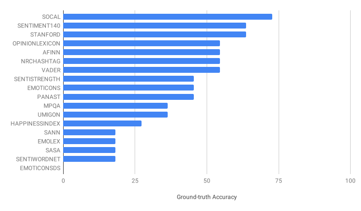

Peer Reviewing Revisited: Assessing Research with Interlinked Semantic Comments
Linkflows Project Updates - 18th September 2019
These slides: https://tinyurl.com/Linkflows-18-September-2019
K-CAP'19 research article track
Camera-ready submission at the end of September!
Read the article here by scrolling or download it with right click + "Save As..."
A model of the processes of fine-grained reviews

Research question
Can an approach for scientific publishing based on a fine-grained semantic model help to make reviewing better structured and more accurate?Reviews can be made more structured and precise
Can reviewing be better automatically organized by writing structured fine-grained reviews?
- Aspects: whether the review comment is about syntax, style or content
- Positivity/Negativity: whether a negative, neutral, balanced or positive comment was pointed out by the reviewer
- Action needed: the action that needs to be taken by the author(s) of the text snippet according to the reviewer
- Overall impact on quality: the impact of the point raised in the review comment on the overall quality of the article according to the reviewer
Linkflows model for reviewing
Selected datasets
- Recent publications with open peer-reviews
- Journals and conferences in the Computer Science field
- Articles and reviews selected randomly
| Data Science Journal 2017-2018 | Semantic Web Journal 2018 | PeerJ CS Journal 2018 | Openreview.net 2018 | ||||||
|---|---|---|---|---|---|---|---|---|---|
| ISWC-DeSemWeb | ISMIR-WoRMS | ||||||||
| Total | Selected | Total | Selected | Total | Selected | Total | Selected | Total | Selected |
| 13 | 7 | 38 | 7 | 26 | 7 | 10 | 7 | 11 | 7 |
Most review comments target paragraphs: fine-grained reviewing makes sense!

The results of the model expert annotations are within expectations

Most Sentiment Analysis methods perform badly
Evaluation of the Linkflows model
- Model experts: rate snippets according to model dimensions
- Original peer-reviewer: establish ground-truth for model dimensions
- Peers: how they compare with model experts and original reviewers
The dimensions of the Linkflows model are well understood and easy to apply

Model experts and peers agree with each other more than with the original reviewer

Peers perform much better than model experts and sentiment analysis tools

Model experts do not perform significantly better than peers and there is a wisdom of the crowd effect

Next steps: implementation of Linkflows model for reviewing (1)
- Continue the research proposed in the K-CAP article
- Extend the model to a more complete set of interactions and processes of the scientific publishing workflow
- Novelty: scientific publishing at a finer-grained level that uses a decentralized network as a publication means with semantic Web-like links
Next steps: implementation of Linkflows model for reviewing (2)
- Connect nanopublications to model
- Extend the model: refersTo, isResponseTo, isUpdateOf, hasCommentAuthor, hasCommentText
- Implement interfaces: evaluation-driven interfaces!
Perform evaluation for different aspects
- User study: let users use our system and rate its usefulness
- Competency questions: what information would be interesting for editors/authors when the Linkflows model is used
- Editors study: let editors rate the usefulness of the system
Competency questions: your input* is needed!
- How many comments were positive/negative per review?
- How many negative review comments had an impact higher than 3?
- Which reviewer focused more on content/style/syntax?
- Comparing papers: which of the papers was more controversial?
- Which part is most (positively/negatively) commented?
- How many high impact comments that needed to be addressed were not addressed?
- What are important points that need fixing?
*please add your competency questions in the linked document